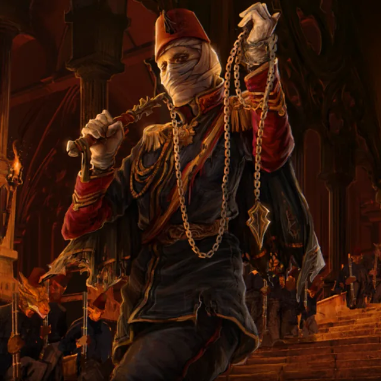

Alemdar Mustafa Pasha is a bandaged figure who shows the world nothing but his eyes — reputed the dead commander of the Sekban, and known in the shadows as the masked revolutionary, the Ghost of March. He is a man of tactics and cold composure, ever poised for the bloodshed that may come; his hands are bound tight in magical wrappings that preserve his own person and shield those about him, and it is said of him that he bridges the worlds above and below. His is the cause of the cast-out and the spellstruck: within the hidden reaches of the Undercity he holds great sway, honoured for keeping order among its people and for guarding its children against the gangs that would prey upon them.
When he met the company he greeted Gizem Faruki by name — betraying that their coming was no surprise to him — and voiced his approval of their deeds, as Sharif the Strong Fur, a cat and go-between, had reported them. He asked whether they had been followed, and spoke of the need for a common front with Ahra 'the Wolf' of the Janissaries, their old enmity notwithstanding, begging them carry terms to her and urging that unity served the Empire and all who dwell in it. He made mention of a young tiefling, Shehrazat, afflicted with the blood rot, and asked Sidra al-Najjar to visit and to help her if she could; and he set before them a leather-tied journal of Osman's, which he had taken but could not decipher, for their use. A fine longsword, fit for battle, hung behind his desk.
He held to a policy of studied misdirection, counselling the party to preserve the show of an undying Janissary–Sekban enmity for the confounding of watching eyes, and inviting them to send him recruits — any versed in the elements or in alchemy — to swell the ranks of the new Sekban Army. Through Kore he arranged safe lodging for a band of children lately in the grip of a gang-lord, the dwarf Usta Kerim, at a price of twenty gold the party won from that defeated foe; so provided, the children were sheltered and kept, and his standing as a protector and a lawful authority amid the gangs' misrule stood the firmer for it.
It was the Ghost of March who put Nazif the perfumist to death, charging him with betrayal and declaring his charge passed to the Council of the Ninth Life; a state of emergency followed from the Bostanji Imperial Guard, and the crowd scattered in confusion. When Sidra al-Najjar came forward to ask an audience, the answer was, "Now is not the time, little one, but soon," and he led his train away as the guards restored order, his people melting into the city's shadows. Gizem Faruki afterward remarked that his followers wore Sekban uniforms — that corps remembered for the breaking of the Janissaries — and so tied them to an old history of violence; his deeds set tongues wagging of the city's unrest, the weapon-thefts and the protests alike.
Of late he has been linked to the journal Osman pronounces a forgery, whence a meeting was set in the Undercity, at the Arraf Tavern, to obtain the true book — Osman showing plain reluctance to venture below, a sign, perhaps, that the Ghost is both dangerous and given to guile. He has had his part, too, in the party's affairs, sending them to find Alexander and voicing his concern for the welfare of Osman Hamdi Bey; and he asked them to recover a sword lately turned against his life, describing it in full — a blade the company knew for the twin of one set out on show at the Janissary headquarters. His doings may yet cross those of sundry factions — rival treasure-hunters, and A Certain Community, which sets itself against all plurality and would smother the magical orders.
Alemdar Pasha is, besides, a senior commander of the Turkish arms, renowned alike for his martial skill and his philosophy, and bound to a younger Padishah Abd-ul Mejid, the Padishah that was to be. He preaches discipline and an enlightenment won through the training of the body — that wounds bring wisdom, and that a universal rapture is reached by disciplined precision — and rebukes the young prince for turning magic against their own people, holding fast to the proprieties of combat. In a shared dream he schools the boy in the worth of focus and the cost of distraction, turning aside a magical stroke of his in proof of a command of both the arcane and the martial. What he wants, and what he truly means, grows only more interesting to those who must deal with so shadowed a figure — a blend of old grievance and coming intrigue, rooted in the Undercity.